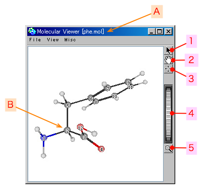
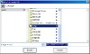
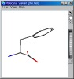
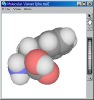

2006年08月08日 文責：浅岡 浩子
もくじ：
分子ビューアは、分子の構造を２Ｄや３Ｄで表示します。
原子数・結合数などの詳細情報も表示します。
空の分子ビューアを開くには、 ケモじゅんランチャー の 「Tools」->「Molecular Viewer」メニューを選択します。
分子ビューアで「File」->「Open」メニューを選択して、分子ファイルを好きなフォルダから選んでください。
サンプルデータフォルダ内にある分子を表示する場合には、 ケモじゅんランチャー の 「Tools」->「Molecular Viewer
- Select Data」メニューが便利です。
特定のフォルダ内にある分子ファイルのリストが出てくるので、その中から選んでください。
分子ビューアの画面は以下のようになっています。

ビューアのウィンドウ操作 で見る方向や範囲を変更できます。
表示のサブメニューで、表示方法などの変更が出来ます。
ウィンドウの上部にあるメニューです。
|
|
|
|
新しい空の分子ビューアが開きます。
分子ファイルを指定して、ファイルの内容をビューア内に表示します。
分子ファイル（*.mol）を指定するダイアログが現れます。
ファイルを選択して「Accept」ボタンを押します。
ビューア内に開いている分子ファイルを、別名で保存します。
分子ファイル（*.mol）を入力するダイアログが現れます。
ファイル名を入力して「Accept」ボタンを押します。
デフォルトのファイル名は、[元のファイル名]_[年月日時分秒].molです。
ビューアに表示されている状態の画像ファイルを作成します。
画像ファイル（*.jpg）を入力するダイアログが現れます。
ファイル名を入力して「Accept」ボタンを押します。
デフォルトのファイル名は、[元のファイル名]_[年月日時分秒].jpgです。
-- (Save as Image) --> 
作成した場所を忘れないようにしましょう。
[Shift] キーもしくは [Alt] キーを押しながらメニューを選択すると、グレースケールの画像を作成します。
ウィンドウを閉じます。
このウィンドウに関連した、詳細情報やビューポートのウィンドウも同時に閉じます。
平面構造で表示します。
ファイル名が *.2D.mol の分子ファイルを開いたときは、このメニューが自動的に選択されます。
結合を太い軸で表示します。
軸の色は、原子毎に決まっています。
軸の数は、結合タイプを表しています。
最初はこのメニューに設定されています。
上記のスティックに加え、原子を小さな球で表示します。
原子球の大きさは、 van der Waals 半径 の約８分の１です。
球の色は、原子毎に決まっています。
原子を van der Waals 半径の球で表示します。
球の色は、原子毎に決まっています。
上記のスティックとスペースフィルを同時に表示します。
スペースフィルは透過色で表示します。
水素の表示／非表示の設定をします。
チェックがついている状態で、水素が表示されます。
スペースフィル表示の場合は、このメニューのチェック状態にかかわらず水素を表示します。
| チェックON | チェックOFF |
|  | |
| 表示 | 非表示 |
シリアル番号の表示／非表示の設定をします。
チェックがついている状態で、シリアル番号が表示されます。
スペースフィル表示の場合は、自動的にシリアル番号は非表示の状態になります。
| チェックON | チェックOFF |
| 表示 | 非表示 |
どのシリアル番号を表示するかの設定をします。
原子種を選ぶウィンドウが現れますので、チェックボックスで表示／非表示を設定してください。
上記の「Serial Nos. of Atoms」メニューで、シリアル番号を表示する状態にしていないと、このメニューを選択できません。
低解像度でビューア内に表示します。
表示は荒くなりますが、描画面数が少なくなるので処理が速くなります。
中解像度でビューア内に表示します。
最初はこの解像度に設定されています。
高解像度でビューア内に表示します。
表示は詳細になりますが、描画面数が多くなるので処理が遅くなります。
画面をキャプチャする時などに使用すると良いでしょう。
ビューア内に表示しているものの全体が見られます。
-- (Reset) --> 
|
|
基本説明、メニュー等の説明が記述してある取扱説明書 (このページ)をブラウザで開きます。
右下に詳細情報のウィンドウが開きます。
ファイル名や原子数、結合数などを表示します。
ビューファインダ のウィンドウが開きます。
分子ビューア内に３Ｄで描かれている物体が、ビューファインダ内に開きます。
しかし、シリアル番号や修飾基などの文字情報は表示されなくなります。
ＶＲＭＬとして保存する場合などに利用してください。
右隣にビューポートのウィンドウが開きます。
ビューポート内に描かれている黄色い板が、分子ビューアのウィンドウに相当しています。
ビューアでどの方向からどの範囲が表示されているのか分かります。
ビューポートの詳細については、下記のページにまとめられています。
http://www.sra.co.jp/people/h-asaoka/study/TextbookAboutJun/17/ 「視体積」
参照してみてください。
このメニューは、ランタイム版では選択することができません。
開発時にプログラムの状態などを確認するためのメニューです。
選択可能な場合は、インスペクターが開きます。
{kind=link}
{kind=link}
{kind=link}
{kind=link}
{kind=link}
{kind=link}
{kind=link}
{kind=link}
{kind=link}
{kind=link}
{kind=link}
{kind=link}
{kind=link}
{kind=link}
{kind=link}
{kind=link}
{kind=link}
{kind=link}
{kind=link}
{kind=link}
{kind=link}
{kind=link}
{kind=link}
{kind=link}
{kind=link}
{kind=link}
{kind=link}
{kind=link}
{kind=link}
{kind=link}
{kind=link}